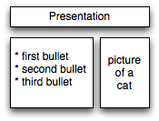
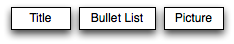
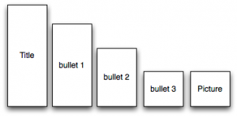
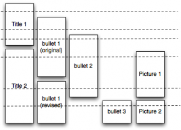

Instead of PowerPoint
After cursing PowerPoint for eight solid months while building screencasts for Software Carpentry, I think I have figured out what I want instead. Here’s a top-down view of a PowerPoint slide (drawn, ironically, with OmniGraffle):

Here’s the same slide seen edge-on:

The vertical axis in this view is time: all of the objects in the slide are created when the slide is created, and are cleared away when we advance to the next slide.
When I’m presenting in person, I budget roughly three minutes per slide. I don’t worry about losing the audience’s interest by keeping a static image up for that long because I’m a fairly animated presenter: I point at things, walk back and forth, make eye contact, and so on, all to provide the motion and flow that my slides don’t. Many good presenters, though, prefer to keep things moving on screen as well, and PowerPoint supports that by allowing items to be revealed progressively. If we do that, the side view looks like this:

When I first started creating screencasts back in May, I quickly realized that my “static slide for three minutes” style didn’t work: unless something was changing on screen every 15 seconds or so, viewers’ attention would wander. I experimented with using progressive reveal in PowerPoint, but discovered three shortcomings. First, there is no easy way to sync my scripts (written in the notes portion of the slide) with the reveal of particular elements. Second, when slides are exported to PNG or PDF, the progression is lost–everything comes out together. Third, there’s no way for an element to span several slides: PowerPoint insists on a strict slide/object hierarchy.
The third point is the key to what I want instead. I want to be able to create “slides” like this:

Here, there’s no longer a notion of “a slide”. Instead, there are graphical objects with lifespans, and slides horizontally across the timeline that display whatever is “alive” at that moment. This model seems better suited to creating screencasts (or other continuous video), and I suspect it would be better for traditional live presentations as well (particularly if it was possible to modify the properties of objects as a function of time, e.g., to change an object’s location between one snapshot and another).
I think I could create something like this in an image editor that supported layers (one layer per object) and scripting (to turn layers on and off), though that would be a fairly clumsy user interface. A more elegant one doesn’t feel like it would be hard to design, but I’m hoping someone has already built this for me. If so, I’d welcome pointers.